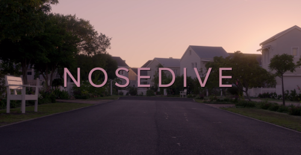
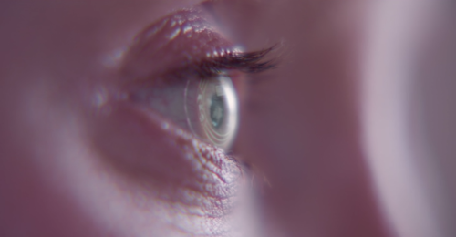
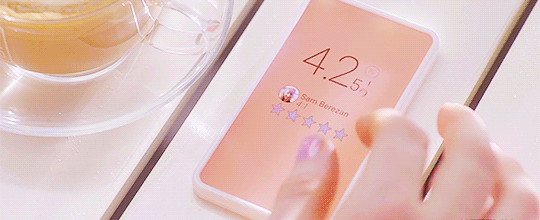
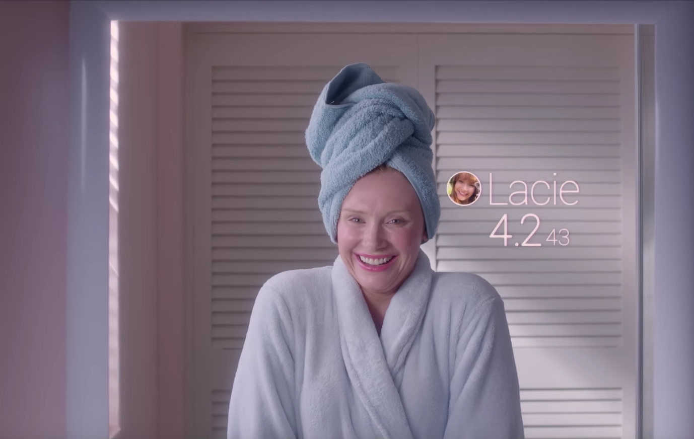
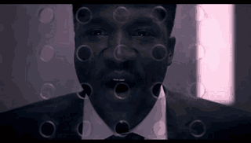

Nosedive
created by Ana Maria Ramirez and Justine Torres Guerrero
Analisis
|
|
 |  |
1. Do we need an opinion, something to belive, or some kind of knowledge about the limits of technology? and why?
2. Do you think that technology improves our knowledge tools and habilities? and why?
1. I think we do have to get a knowledge and an opinion about the limits of technology.
This way we will be able to make a difference between the pros and cons of any kind of technology.
For example, I can understand very well everything related to Instagram, but also understand when to start and when
to stop using it, so I wouldn`t become dependent on this type of social networks.
2. I think technology has many advantages and disadvantages for us. For instance, technology has been
an excellent tool for medicine, transport, construction and communication among other human needs.
Through technology we can keep on constructing our own knowledge, ideas, theories, thinking, concepts, etc.
So, I`m totally sure that it depends just on us. The way in which we use this technology: in order to stop thinking,
or in order to keep on learning?
Video
1. What is the relationship between technology and the truth? and why?
2. Do you think technology can help us make moral decisions?
|  |  |  |
Symbol
This symbol means that when people are using any kind of social media they can’t be themselves and tend to wear a mask to hide their true personality,
a clear example is Lacie from Nosedive (Black Mirror). She pretends to be someone she isn’t and doesn’t act like herself,
she always acts kind to others even if they make her mad and she does all of that because of the social networks.
.jpg)